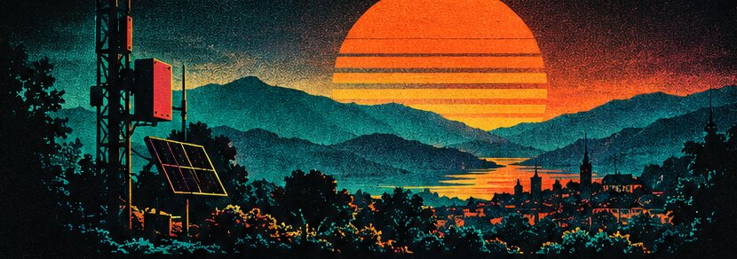
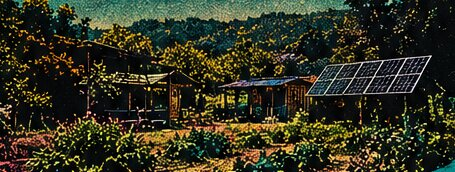
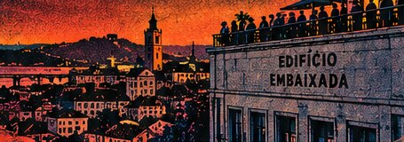

Offgrid
communications
Radio, mesh, satellites, solar, and more.
Offgrid Communications,
Communities & People
Real connections.
Independent tech.
Stronger communities.
A more resilient tomorrow.

SemRede is a week-long event in Coimbra, bringing together people who care about offgrid communications, self-sufficient living and thriving communities.
Share knowledge, learn new skills, meet like-minded people and be part of a growing movement.
"Sem rede" is Portuguese for "no network": the moment your phone loses signal. This week is about what we can still do when that happens.
Radio, mesh, satellites, solar, and more.
Food, energy, water, self-reliance.
Collaboration, projects, inspiration.
Hands-on sessions, real-world knowledge.
Connect with others who live (or dream of) offgrid life.

Coimbra
A working farm and learning space for a regenerative future. Five days of hands-on sessions, talks and time together.

Coimbra
One day, open to all: talks, demos, community fair, networking and celebration in the heart of Coimbra.
Working on a radio, a mesh network, a solar setup, a garden, a community project? Bring it to SemRede and show it to people who care.
You get a table and space to show your project during the event.
Prefer to present? Tell us and we will find you a slot to speak to everyone.

Haleen, a musical project by a Belgian couple based in off-grid Portugal, has crafted a distinctive genre inspired by their energy shift and consciousness transformation. Their music is described as mind-opening, hypnotic and uplifting, giving listeners courage and lifting their mood.
Hans started his musical journey at a young age, moving from the metal scene to an acoustic guitar tuned to 432Hz. Embracing electronic music, he blended diverse genres into a sound that crosses boundaries.
Kath had a rapid shift in musical taste, moving from mainstream hits to Electronic Dance Music, influenced by artists with a powerful energy. Her palette includes sounds from Sam Garrett, Mose, Peia, Yaima and Ajeet, mirroring her inner transformation.
They perform live, connecting with audiences through love and acceptance.
Listen on FountainSay hello before October, ask what to bring, sort out a ride, or find the people already working on what you care about. The room uses NOSTR, so your extension logs you straight in.
Eva Farm, Oct 19 to 23 / Edifício Embaixada, Oct 24
Connect. Share. Build. Live offgrid.